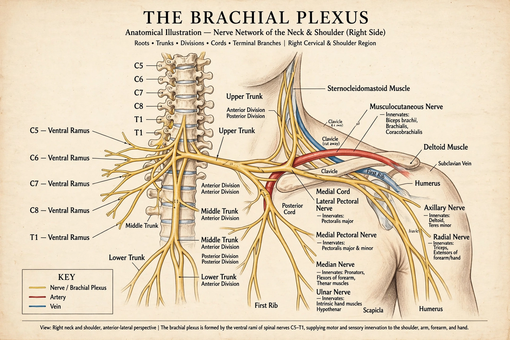

Brachial plexus
The brachial plexus is a network of nerves formed by the ventral rami of the lower four cervical nerves and the first thoracic nerve (C5, C6, C7, C8 and T1). This plexus extends from the spinal cord, through the cervicoaxillary canal in the neck, over the first rib, and into the armpit. It supplies afferent and efferent nerve fibres to the chest, shoulder, arm and hand.
 | |
| From | Ventral rami of C5–T1 |
|---|---|
| Branches | Musculocutaneous, axillary, radial, median, ulnar nerves |
| Innervates | Upper limb, shoulder girdle, parts of the chest wall |
Structure
The plexus is conventionally described in five parts, memorised by the mnemonic "Real Teachers Drink Cold Beer": Roots, Trunks, Divisions, Cords, Branches. The five roots emerge between the anterior and middle scalene muscles and unite to form three trunks — upper (C5–C6), middle (C7) and lower (C8–T1). Behind the clavicle each trunk splits into anterior and posterior divisions; these recombine in the axilla into three cords — lateral, posterior and medial — named for their relation to the axillary artery. The cords give off the terminal branches: the musculocutaneous nerve (from the lateral cord), the axillary and radial nerves (posterior cord), the ulnar nerve (medial cord), and the median nerve (formed by roots from the lateral and medial cords). Smaller branches include the upper and lower subscapular, thoracodorsal, long thoracic, dorsal scapular and suprascapular nerves, and the medial pectoral, medial cutaneous nerves of arm and forearm.
Function
The plexus carries all motor supply to the muscles of the upper limb (except the trapezius and levator scapulae) and cutaneous sensation from the limb and shoulder region, whose dermatomes form a characteristic sequence from the lateral arm (C5) down to the medial hand and forearm (C8–T1).
Clinical significance
Injuries follow two classic patterns. Erb's palsy (Erb–Duchenne), from injury to the upper trunk (C5–C6) — classically from shoulder dystocia at birth or motorcycle accidents — paralyses shoulder abduction and elbow flexion, producing the "waiter's tip" posture. Klumpke's palsy, from lower trunk (C8–T1) injury, affects the intrinsic hand muscles and may include Horner's syndrome if the T1 sympathetic fibres are torn. Traction and avulsion injuries in adults are managed with physiotherapy, nerve grafting and nerve transfers. The supraclavicular and interscalene approaches to brachial plexus block are mainstays of anaesthesia for upper-limb surgery.
See also
Categories: Peripheral nervous system · Upper limb anatomy